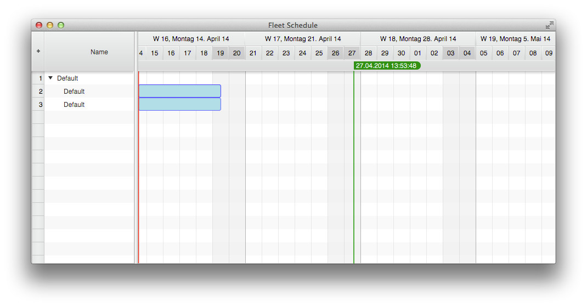
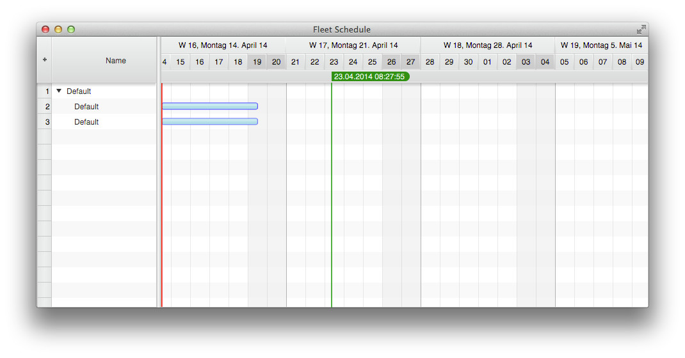
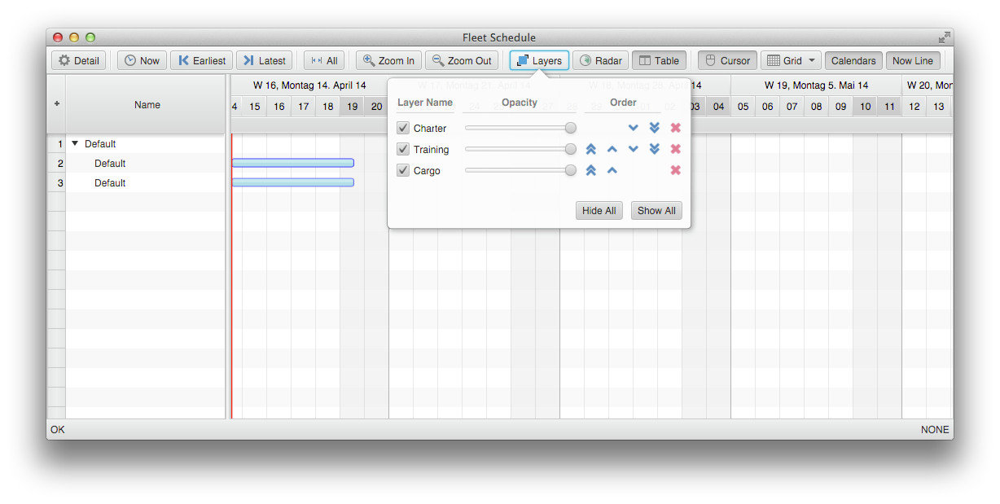

教程
在本教程中，我们将创建一个用于显示机队排班的基础解决方案。要安装 FlexGanttFX，请按照 安装 中的说明操作。
视图模型
让我们先为 Gantt 图表创建一个视图模型。我们的对象包括 Fleet、Aircraft、Crew 和 Flight。Flight 实例会在 Gantt 图表的图形区域中显示为水平条，而前三个对象会显示在树表区域的行中。Fleet、Aircraft 和 Crew 共享一个名为 ModelObject 的公共父类，它扩展自 Row。Row 类通过三个类型参数来定义层次化数据结构：第一个指定父行类型，第二个指定子行类型，第三个指定将在 Gantt 图表右侧显示的活动类型。
模型对象
P extends Row<?,?,?>, // Type of parent row
C extends Row<?,?,?>, // Type of child rows
A extends Activity> extends Row<P, C, A> { }
现在，我们可以将 ModelObject 作为类型参数传入，用于创建 GanttChart 控件实例。这会告知控件所有行都具有这个公共超类型。
GanttChart<ModelObject<?,?,?> gantt = new GanttChart<>()
假设一个机队由多架飞机组成，每架飞机都有一个机组，并且航班会分配给飞机和机组，则 Aircraft 模型类可以按以下代码片段实现。
public class Aircraft extends ModelObject<Fleet, Crew, Flight> {
public Aircraft(String name) {
super(name);
}
}
Flight 类扩展 MutableActivityBase，可能如下所示：
public class Flight extends MutableActivityBase<FlightData> {
public Flight(FlightData data) {
super(data.getFlightName()); // the activity name
setStartTime(data.getFlightDepartureTime()); // times as java.time.Instant
setEndTime(data.getFlightArrivalTime());
setUserObject(data); // a user object according to the type argument above
}
}
该类将航班定义为一个可变活动，这意味着用户可以编辑 / 修改该航班。我们还可以看到，该活动从类型为 FlightData 的领域对象获取信息。支持用户对象使我们能够在领域模型和视图模型之间建立连接。现在剩下的工作就是将活动（航班）添加到行（飞机）中。为此，我们只需调用 Row.addActivity(Layer, Activity) 方法。
活动仓库
行本身并不存储活动，而是将所有与活动相关的功能委托给类型为 ActivityRepository 的仓库。默认仓库的类型为 IntervalTreeRepository。应用程序可以实现自己的仓库，并通过调用 Row.setRepository() 进行注册。
层
层用于创建活动分组，以便它们可以一起显示 / 隐藏。在我们的示例中，我们希望根据服务类型（货运、包机、训练等）对航班进行分组。
Layer cargoLayer = new Layer("Cargo");
Layer trainingLayer = new Layer("Training");
Layer charterLayer = new Layer("Charter");
// make layers known to Gantt
gantt.getLayers().addAll(cargoLayer, trainingLayer, charterLayer);
现在，Gantt 图表知道需要渲染哪些层，我们可以创建层与活动之间的关联。这是在将活动添加到行时完成的（这里是将航班添加到飞机）。
Flight flight1 = new Flight(); // a cargo flight
Flight flight2 = new Flight(); // a training flight
Flight flight3 = new Flight(); // a charter flight
aircraft1.addActivity(cargoLayer, flight1);
aircraft1.addActivity(trainingLayer, flight2);
aircraft2.addActivity(charterLayer, flight3);
在以下代码示例中，我们将上面的所有步骤组合在一起。
import javafx.application.Application;
import javafx.scene.Scene;
import javafx.stage.Stage;
import com.flexganttfx.model.Activity;
import com.flexganttfx.model.Layer;
import com.flexganttfx.model.Row;
import com.flexganttfx.model.activity.MutableActivityBase;
import com.flexganttfx.view.GanttChart;
public class MyFirstGanttChart extends Application {
/*
* Common superclass of Fleet, Aircraft, and Crew.
*/
class ModelObject<
P extends Row<?,?,?>, // Type of parent row
C extends Row<?,?,?>, // Type of child rows
A extends Activity> extends Row<P, C, A> { }
class Fleet extends ModelObject<Row<?,?,?>, Aircraft, Activity> { }
class Aircraft extends ModelObject<Fleet, Crew, Flight> { }
class Flight extends MutableActivityBase<Object> { }
@Override
public void start(Stage stage) throws Exception {
// Our root object.
Fleet fleet = new Fleet();
fleet.setExpanded(true);
// Create the control.
GanttChart<ModelObject<?,?,?>> gantt = new GanttChart<>(fleet);
// Layers based on service type.
Layer cargoLayer = new Layer("Cargo");
Layer trainingLayer = new Layer("Training");
Layer charterLayer = new Layer("Charter");
gantt.getLayers().addAll(cargoLayer, trainingLayer, charterLayer);
// Create the aircrafts.
Aircraft aircraft1 = new Aircraft();
Aircraft aircraft2 = new Aircraft();
// Add the aircrafts to the fleet.
fleet.getChildren().addAll(aircraft1, aircraft2);
// Create the flights
Flight flight1 = new Flight(); // a cargo flight
Flight flight2 = new Flight(); // a training flight
Flight flight3 = new Flight(); // a charter flight
aircraft1.addActivity(cargoLayer, flight1);
aircraft1.addActivity(trainingLayer, flight2);
aircraft2.addActivity(charterLayer, flight3);
Scene scene = new Scene(gantt);
stage.setTitle("Fleet Schedule");
stage.setScene(scene);
stage.centerOnScreen();
stage.sizeToScene();
stage.show();
}
public static void main(String[] args) {
Application.launch(args);
}
}
下图展示了运行此代码后将看到的结果。

活动渲染器
仅用几行代码就得到这样的结果并不差，不过航班的渲染效果并不美观。我们可以通过注册不同的 ActivityRenderer（用于活动类型 Flight）来自定义其外观。这通过调用 GraphicsBase.setActivityRenderer() 方法完成，其中图形视图是 Gantt 图表右侧的控件，负责渲染所有活动。我们可以在上面的示例中添加以下几行代码。
GraphicsView <ModelObject<?, ?, ?>> graphics = gantt.getGraphics();
graphics.setActivityRenderer(Flight.class,
GanttLayout.class,
new ActivityBarRenderer<>(graphics, "FlightRenderer"));
这会将默认活动渲染器替换为一个绘制固定高度条形的渲染器。这段代码有趣之处在于，我们不仅传入了活动类型和渲染器实例，还传入了布局类型。在本快速入门指南中，我们不想花太多时间讨论布局，但可以简单理解为 FlexGanttFX 能够以多种不同方式显示活动（作为时间条、图表条目或日程条目）。我们的示例现在如下所示：

现在，我们可以向示例中添加 GanttChartToolBar 和 GanttChartStatusBar。这样我们就可以对图表执行操作，并验证层是否已正确添加。FlexGanttFX 的 “extras” 库包含其他控件，例如 GanttChartStatusBar 和 GanttChartToolBar。使用标准的 BorderPane，可以轻松地将 Gantt 图表和这两个控件组合成一个复杂控件。
BorderPane borderPane = new BorderPane();
borderPane.setTop(new GanttChartToolBar(gantt));
borderPane.setCenter(gantt);
borderPane.setBottom(new GanttChartStatusBar(gantt));
Scene scene = new Scene(borderPane);
现在，单击工具栏中的层按钮后，我们的示例如下所示。

监听变更
既然我们已经可视化了数据，显然还希望与其交互，并获知我们所做的更改。默认情况下，我们的活动是可编辑的。这意味着可以水平或垂直拖动它们。要接收事件，我们只需在图形视图控件上注册一个 ActivityEvent 处理器，做法是调用 GraphicsBase.setOnActivityChanged()。
为简化本教程，我们只注册一个将事件打印到控制台的处理器。可以这样实现：
graphics.setOnActivityChanged(evt -> System.out.println(evt));
再次运行应用程序时，我们将看到以下输出：
event type: DRAG_STARTED, time interval: 2014-04-17T21:45:00Z - 2014-04-22T21:30:00Z,
value (chart value / percentage complete): 0.0,
activity "null from 2014-04-18T12:15:00Z until 2014-04-23T12:00:00Z,
user object = null",
row = "Default",
layer = "Training"
event type: DRAG_ONGOING, time interval: 2014-04-17T21:45:00Z - 2014-04-22T21:30:00Z,
value (chart value / percentage complete): 0.0,
activity "null from 2014-04-18T12:15:00Z until 2014-04-23T12:00:00Z,
user object = null",
row = "Default",
layer = "Training"
event type: DRAG_FINISHED, time interval: 2014-04-17T21:45:00Z - 2014-04-22T21:30:00Z,
value (chart value / percentage complete): 0.0,
activity "null from 2014-04-18T03:00:00Z until 2014-04-23T02:45:00Z,
user object = null",
row = "Default",
layer = "Training"
请注意三个不同的事件类型：DRAG_STARTED、DRAG_ONGOING 和 DRAG_FINISHED。第一个会在用户开始拖动时触发，第二个会在拖动仍在进行时触发，第三个会在拖动结束时触发。这种模式在 JavaFX 本身中也可以看到，并且在整个 FlexGanttFX 中同样采用。请务必查看 ActivityEvent 类中定义的各种事件类型，以了解用户执行编辑操作时你可以接收到多少信息。